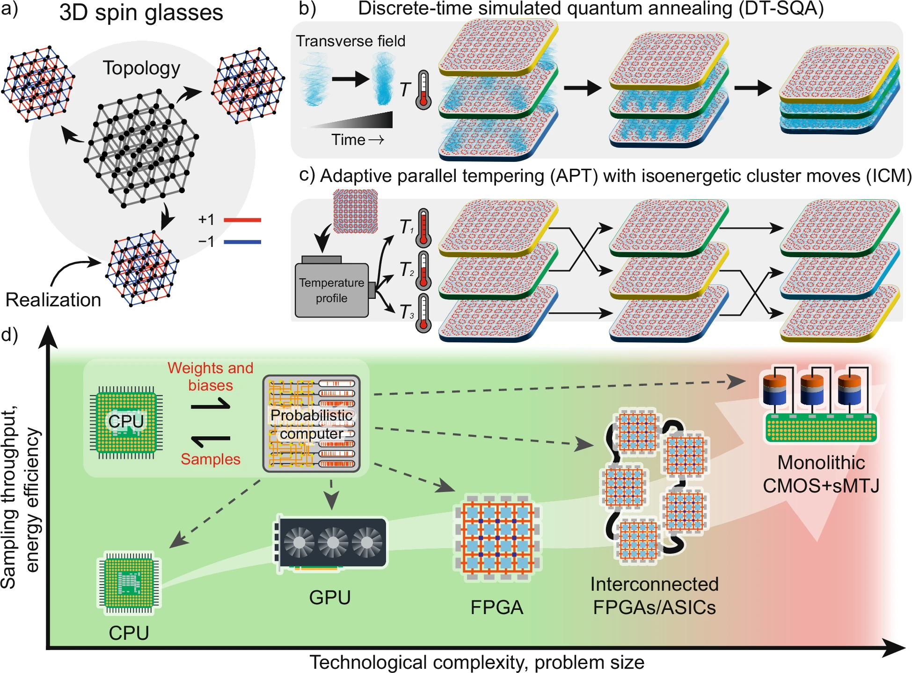

Pushing the Boundary of Quantum Advantage in Hard Combinatorial Optimization
Nature Communications, 2025
This work demonstrates that probabilistic computers, co-designed with hardware to implement Monte Carlo algorithms, provide a scalable classical pathway for solving hard optimization problems. We focus on three-dimensional spin glasses and benchmark against leading quantum annealers. Our adaptive parallel tempering algorithm, supported by non-local isoenergetic cluster moves, scales favorably and establishes a rigorous classical baseline for assessing practical quantum advantage. Field Programmable Gate Arrays can implement these algorithms in modern hardware, leveraging massive parallelism to accelerate them while improving energy efficiency.